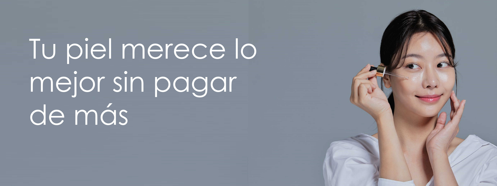
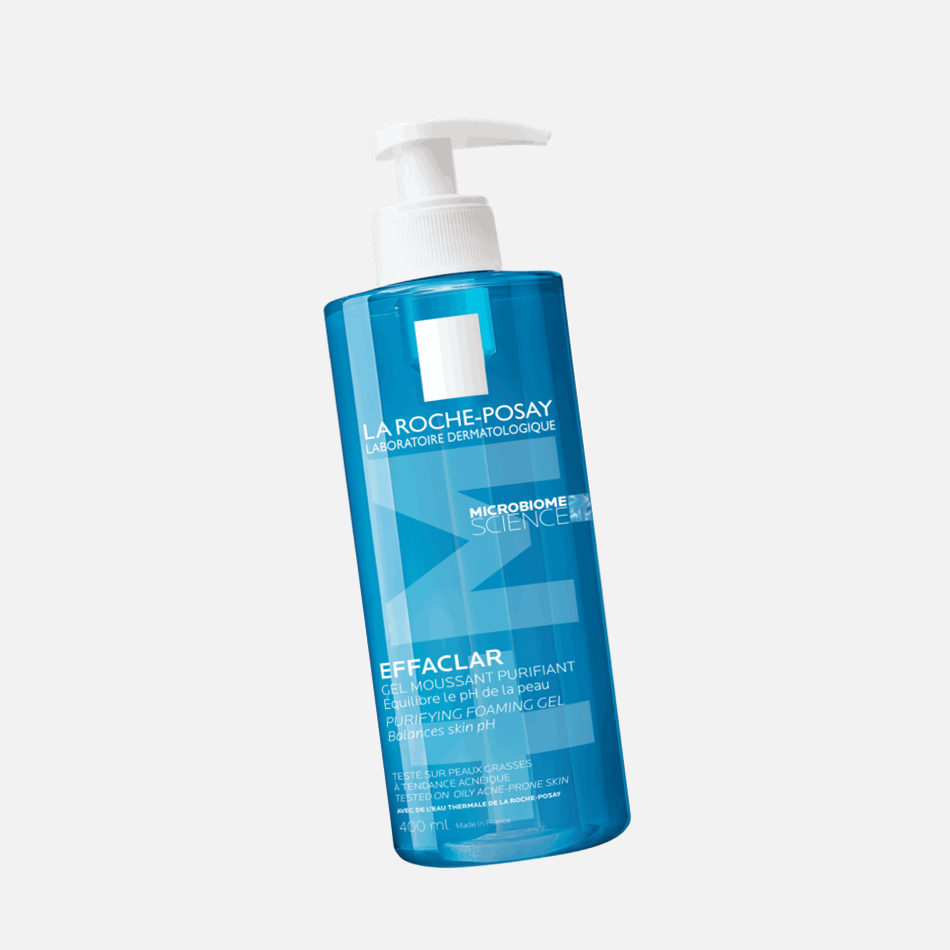
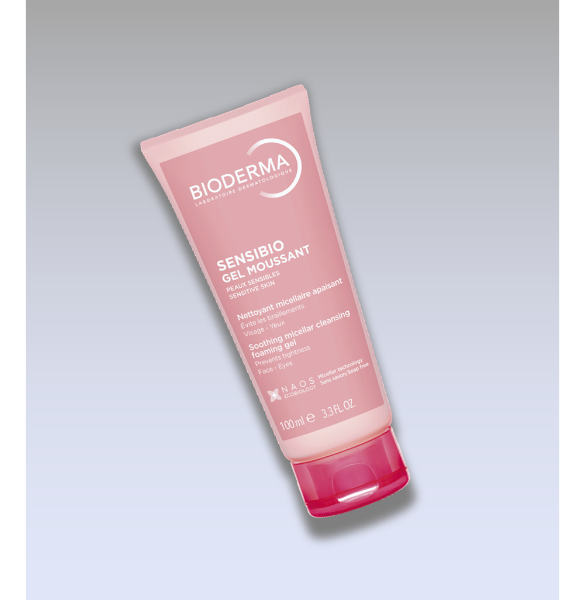
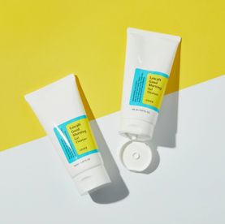
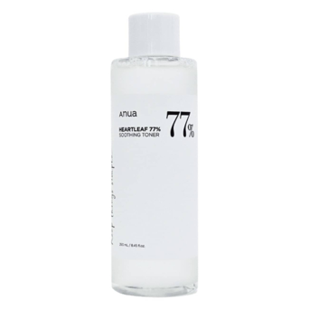
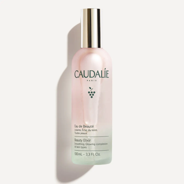
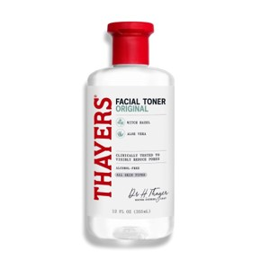
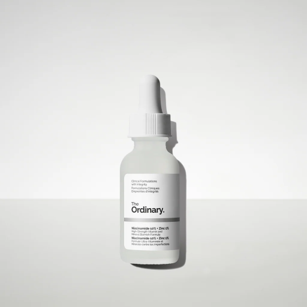

LIMPIADORES

La Roche-Posay Effaclar Gel Purificante

Bioderms Sensibio Gel Moussant

The face shop Rice Water Bright Light

COSRX Low pH Good Morning Gel Cleaner
TONICOS Y BRUMAS

Some By Mi AHA-BHA-PHA 30 Days Miracle Toner

Anua Heartleaf 77% Soothing Toner


SERÚMS Y TRATAMIENTOS

The Ordinary Niacinamide 10% + Zinc 1%

Paula's Choice Skin Perfecting 2% BHA Liquid Exfoliant

Timeless Skin Care vitamin C + E Ferulic Acid

The Ordinary Hyaluronic Acid 2% + B5
PROTECTORES SOLARES

Supergoop Unseen Sunscreen SPF 40

Beauty of Joseon Relief Sun: Rice + Probiotics SPF 50+

La Roche-Posay Anthelios UVMune 400 Oil-Control Fluid

Isdin Fotoprotector Fusion Water Magic
x
 ×
×
Tu Carrito
Total Acumulado:
$00.000